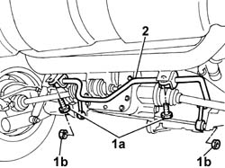

4420C10 REAR SUSPENSION STABILIZER BAR - R+R
- Path
- Procedures > 44 SUSPENSION AND WHEELS > 4420 REAR SUSPENSION > 4420C REAR SUSPENSION STABILIZER BAR/LINKS > 4420C10 REAR SUSPENSION STABILIZER BAR - R+R
- Kind
- repair procedure (removal / refitting; the operation number is the code)
- Applies to
- engines: 1.2 8v; all production periods
- Interactive page
- https://sloeber94.github.io/elrnDB-fPnd/en/#/169001841
Applies to: engines: 1.2 8v; all production periods; only with equipment: 4x4
 Removing
Removing
 Refitting
RefittingPosition the vehicle on a lift.
Raise the vehicle.
1. Undo the fixing bolts (1a) and nuts (1b).
2. Release and remove the rear suspension anti-roll bar.

Applies to: engines: 1.2 8v; all production periods; only with equipment: 4x4
Refitting
RemovingPlace the rear anti-roll bar in position.
Tighten the bolts securing the rear anti-roll bar to the supports on the vehicle.
Value daNm | Fastening | Component | Ø | |
|---|---|---|---|---|
- | 3.5 | Bolt | - | M8 |
Tighten the nuts fixing the connecting rods to the suspension arm to torque.
Value daNm | Fastening | Component | Ø | |
|---|---|---|---|---|
- | 5.5 | Nut | - | M10 |
Lower the vehicle.
Remove the vehicle from the lift.